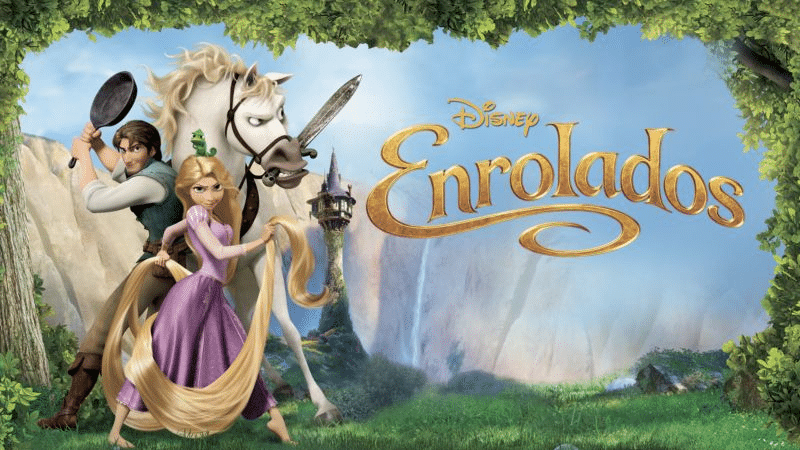
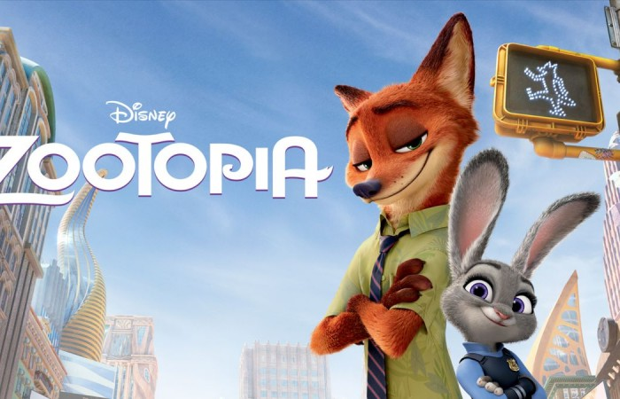
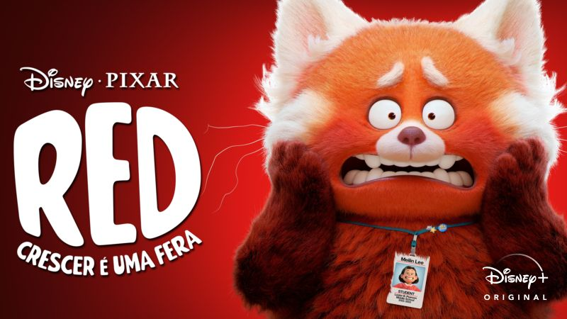

Enrolados

SINOPSE: O bandido mais procurado do reino, Flynn Rider, se esconde em uma torre e acaba prisioneiro de Rapunzel, residente de longa data do local. Dona de cabelos dourados e mágicos com 21 metros de comprimento, ela está trancada há anos e deseja desesperadamente a liberdade. A adolescente determinada faz um acordo com o rapaz, e, juntos, partem para uma aventura emocionante.
Zootopia

SINOPSE: Em uma cidade de animais, uma raposa falante se torna uma fugitiva ao ser acusada de um crime que não cometeu. O principal policial do local, o incontestável coelho, sai em sua busca.
Red: Crescer É Uma Fera

Em Red: Crescer É uma Fera, quando uma adolescente fica muito nervosa, ela se transforma em um grande panda vermelho. O longa aborda dessa forma, a jornada de amadurecimento da personagem, suas inseguranças dessa fase onde, a personagem principal está dividida entre a filha que sempre foi e sua nova personalidade, intensificada por todos os sentimentos conflitantes que a adolescência provoca.